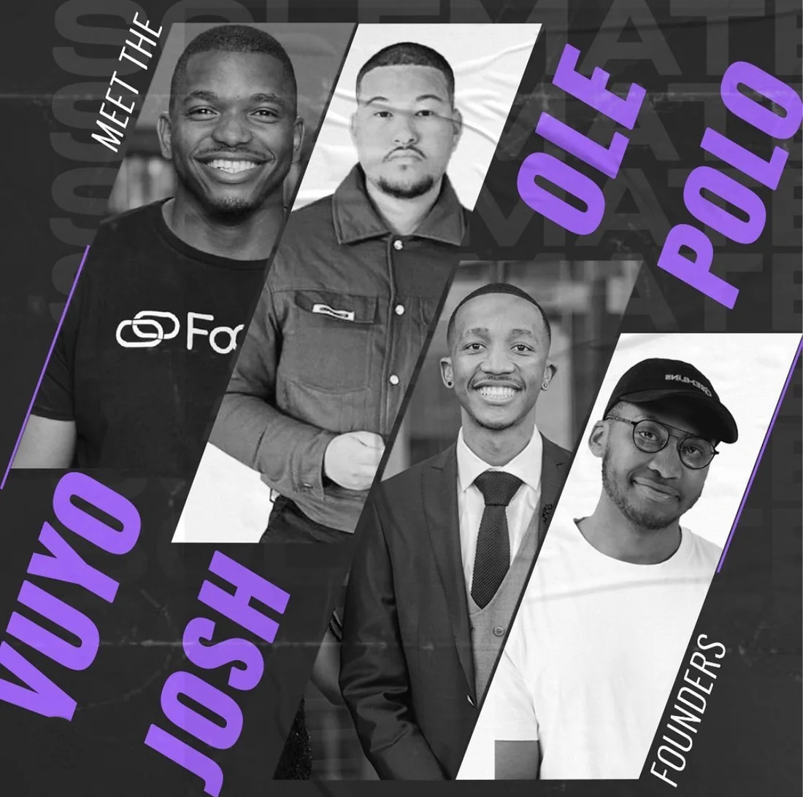
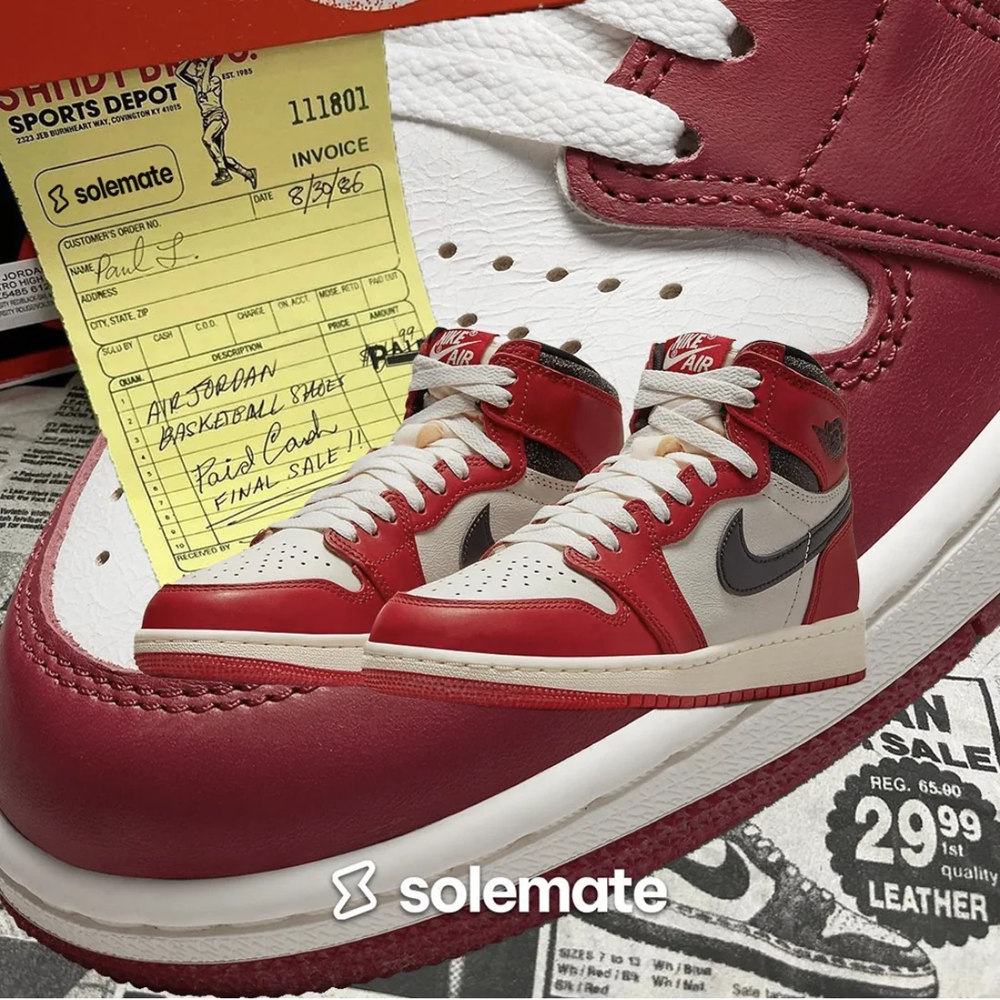
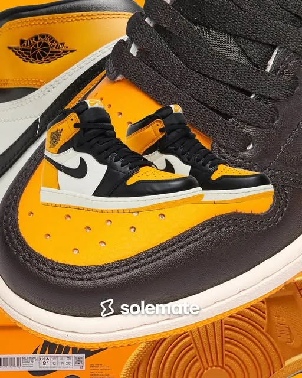
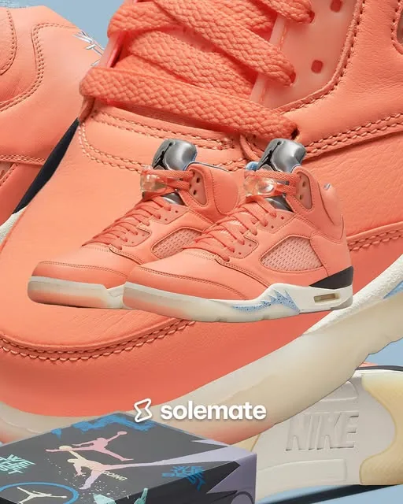
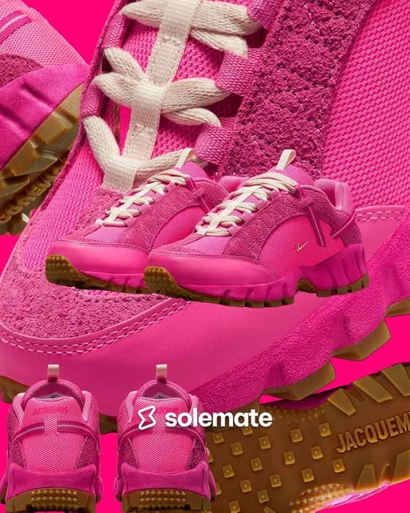
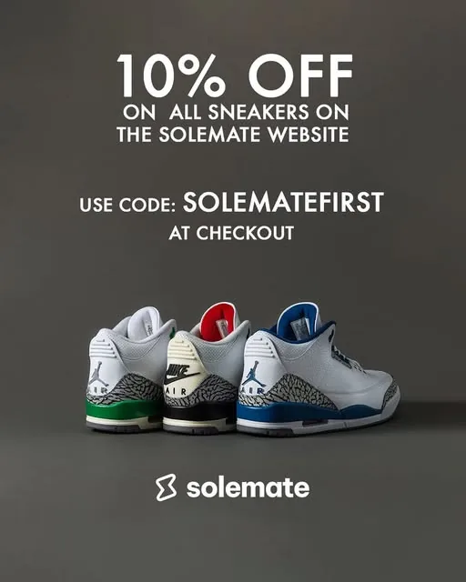

Case study · 2021 – 2024
Solemate
Co-founder & Head of Marketing and Community
Four founders, one pop-up and a sneaker app. Vuyo Pakade, Olebogeng Radise, Polo and I built Solemate to make buying and selling authentic sneakers simple and trustworthy. The Sneaker Shack backed us with R500K, we opened a pop-up at 33 Baker Street, Rosebank, and put the app live a month later. I ran the marketing and the community.
Read the full case study
- R500Kraised from The Sneaker Shack
- R350K+in sales, Oct 2022 to Mar 2023
- +25%revenue growth
- 0 → 1,600Instagram followers in four months
- 10×return on a R1,000 Meta ad (Feb 2023)
- ~3.4Kaverage views on lookbook Reels
- 2021We start building Solemate
- Oct 2022R500K from The Sneaker Shack, pop-up store opens in Rosebank
- Nov 2022The Solemate app goes live
- Feb 2023R1,000 Meta ad brings in about R10,000
- Mar 2023We move fully online
- 2024Funding runs out, operations stop
Three posts a week. One look.
Consistency builds trust. I set the visual direction, the post ideas and the calendar, and our designers brought them to life in Adobe. Every Monday, Wednesday and Friday, the feed showed up looking like one brand.
- Release drops A zoomed-in shoe backdrop, the product and a "SOLEMATE RELEASE" caption telling the shoe's story.
- Lookbook Reels On-foot styling clips.
- Promos Offers like 10% off a first order with SOLEMATEFIRST.
- Pre-Loved Used pairs on consignment. About 200 pairs signed up.
- Community Meet-the-founders posts and a Valentine's giveaway with about 350 entries.





What it taught me
The pop-up made the sales. The screen didn't. When we went fully online in March 2023, sales stopped, and by 2024 the funding had too. Now I never switch off a channel that's working until the new one has proven itself, and I keep a real-world touchpoint while a brand grows online.